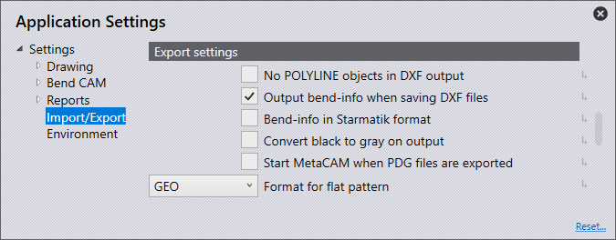

Importera/exportera
I detta avsnitt behandlar vi konfigurationen av Importinställningar.

Klicka på ikonen Inställningar  på startsidan.
på startsidan.

Importinställningar
I detta avsnitt behandlar vi konfigurationen av Importinställningar. Klicka på ikonen Inställningar. Klicka på Importera/exportera och navigera till Importinställningar.

Enheter för DXF-filer – Ställ in antingen millimeter eller tum här.
Max. avstånd mellan ej sammanförda konturdelar – Ställ in detta värde (0>1 mm). När du importerar en del som har linjer/cirkelbågar som är närmare än det inställda värdet, kommer programvaran automatiskt att sy ihop dem vid importen.
Max. plåttjocklek – För att känna igen en stor plåtdel måste tröskeln för plåtkänning höjas. (10>40 mm) Detta ställs automatiskt in som standard på 25 mm eller en tum, beroende på vilken enhet som används.
Punktenheter – Beroende på vilket alternativ som väljs avgörs hur punkterna importeras.
Importera alla – Alla punkter importeras och visas.
Hoppa över punkter på polylinjer – Detta hoppar över alla punkter som upptäcks på polylinjer.
Hoppa över alla – Detta hoppar över alla punkter vid import, och inga visas.
Ignorera nivåer i DXF-/DWG-filer – DXF- och DWG-ritningar skapas vanligtvis på olika lager. Med denna inställning ignorerar programvaran dessa lager och flyttar alla objekt till standardlagret.
Dela upp blocken i 2D-ritning – Delar upp grupperingar under import.
Gör vita objekt svarta – Aktivera denna inställning för att konvertera vita objekt till svarta objekt under import.
Mörkare färger under DXF-import – Aktivera denna inställning för att mörka färgade objekt vid import.
Ta bort dubblettsegment – Aktivera denna inställning för att ta bort eventuella dubbla geometrier som finns i delen vid import.
DXF-inställningar
I detta avsnitt behandlar vi konfigurationen av DXF-inställningar. Klicka på ikonen Inställningar. Klicka på Importera/exportera och navigera till DXF-inställningar.

Vinklar i dxf-fil är öppningsvinklar. – Aktivera denna inställning för att vinklarna i en DXF ska hanteras som öppningsvinklar.
Exportinställningar
I detta avsnitt behandlar vi konfigurationen av Exportinställningar. Klicka på ikonen Inställningar. Klicka på Importera/exportera och navigera till Exportinställningar.

Inga POLYLINE-objekt på DXF-bilden – Vanligtvis matas slutna konturer ut som polylinjer vid export av DXF-filer. Vissa CAD-system kan inte bearbeta dessa utdata. Med denna inställning exporterar programvaran DXF med linjer och cirkelbågar. Dessa filer kan läsas överallt, men de skapade filerna är större och kopplingarna mellan linjerna och bockningarna går förlorade.
Visa bockningsinformation när DXF-filer exporteras. – Aktivera denna inställning för att exporterade DXF-filer ska exporteras med bockningsinformation.
Bend-information i Starmatik-format – Aktivera denna inställning för att skriva ut bockningsinformationen i Starmatik-format. Här placeras ett textobjekt exakt i mitten av varje linje som ska vara en bockningslinje.
Ändra svart till grått på bilden – Vid export av 2D-data skrivs objekten i DXF-filen ut i svart som standard. För att bättre kunna känna igen objekten i CAD-programmen skrivs objekten ut i grått med denna inställning.
Starta MetaCAM med exporten från PDG-filer. – Aktivera denna inställning för att en PDG-fil automatiskt ska konfigureras för att öppnas i MetaCAM.
Avvecklingens utmatningsformat – När du exporterar ett platt mönster kan detta ställas in på GEO-, DXF- eller PDG-filformat.
Spline konvertering
I detta avsnitt behandlar vi konfigurationen av inställningarna för Spline konvertering. Klicka på ikonen Inställningar. Klicka på Importera/exportera och navigera till inställningarna för Spline konvertering.

Konvertera splines under import – Ställ in här om splinekonverteringen ska vara avstängd eller om splines ska konverteras till linjer eller cirkelbågar. I båda fallen konverteras varje spline till ett enda polylinjeobjekt som innehåller linjesegment eller bågsegment.
Stödställesberäkning – Antalet linjer eller cirkelbågar som genereras beräknas med hjälp av en av två mekanismer: stigning eller avvikelse.
Längd per linje- eller bågsegment – Om Stigning väljs i beräkningen av nodantal, ställer du in längden på varje båg- eller linjesegment här för att dela upp splinen med hjälp av denna steglängd.
Maximal avvikelse under approximering – Om avvikelse väljs i beräkningen av nodantalet, ställer du in den maximala avvikelsen som är tillåten mellan den ursprungliga jämna splinen och linje- eller bågapproximeringen. Polylinjen konstrueras med så få segment som möjligt, samtidigt som det maximala felet hålls inom denna gräns.
Lös upp modul
I detta avsnitt behandlar vi konfigurationen av inställningarna för Lös upp modul. Klicka på ikonen Inställningar. Klicka på Importera/exportera och navigera till inställningarna för Lös upp modul.

Ignorera skärdelar – När du spränger en modul kommer endast plåtdelar med bockninglinjer att visas om du aktiverar denna knapp. Om du inaktiverar den visas alla delar i modulen.
Indikering av komponenter (pressmuttrar, bultar, + – Använd denna inställning för att välja vilka alternativ som ska visas när du spränger en modul som innehåller andra komponenter.
Från – Endast plåtdelarna visas efter sprängningen, inte andra muttrar/bultar.
Okänt – Endast komponenter som ännu inte har identifierats i programvaran visas.
All – Alla komponenter visas.
Lager tilldelning

I detta avsnitt behandlar vi konfigurationen av Lager tilldelning. Klicka på ikonen Inställningar. Klicka på Importera/exportera och navigera till inställningarna för Lager tilldelning.
I det här avsnittet kan lager som används på delar som importeras till programvaran automatiskt mappas till dess funktionalitet (användning).
Om en importerad del har ett MARK-lager kan detta ställas in så att det automatiskt använder Mark-lagret i programvaran.
Lager namn – Detta är namnet på lagret som, om en del importeras med detta, kommer att använda funktionaliteten som ställts in i panelen ”Använd”.
använda – Detta är lagrets funktionalitet. De olika tillgängliga alternativen är:
Standard – Detta är standardlagret som ska användas för CAM.
Hjälpmedel – Ett hjälplager som inte ska användas för CAM.
Markera Alla objekt i detta lager kommer att markeras, inte skäras.
Närhetsmarkör – Punktobjekt som indikerar laserns framkörningsposition.
Sekvensmarkör – Textmarkörer som anger konturernas sekvensordning.
Omformningscentrum – Centrummarkering för formning (punkt eller litet L).
Omforma fotavtryck – Konturen (fotavtrycket) av en formning.
Förånga – Detta lager används för att skilja foliebränning.
Punktmarkering – Detta lager används för QR-koder.
Information – Detta är ett lager som endast innehåller information.